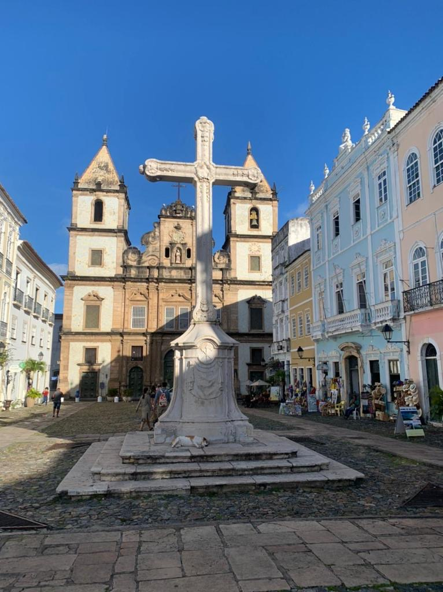
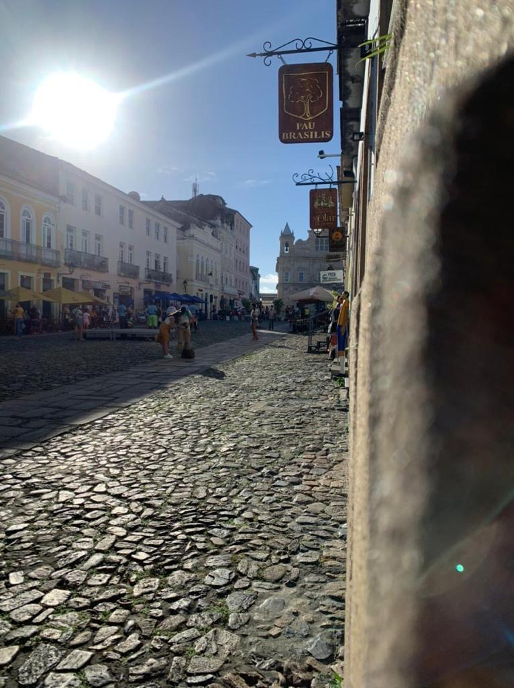

Geschichte:
Pelourinho:
Das Pelourinho ist das alte Stadtzentrum der Stadt, die Architektur des alten Stadtteils stammt aus der kolonialen Zeit, an dem die Sklaven bestraft wurden. Daher sind die Gebäude zwischen dem 17. und dem 19. Jahrhundert erbaut worden.
 Kirche Sao Francisco Largo do Cruzeiro
Candomblé:
Man merkt in der Stadt die Mischung der portugiesischen Architektur und die Einflüsse der Angolanischen Kultur,
denn zur Sklavenzeit, bewahrten die Sklaven (die zum Großteil aus Angola kamen) ihre Bräuche,
noch heutzutage gibt es eine Religion die von vielen der Afro-Brasilianern praktiziert wird.
Diese Religion nennt sich Candomblé und ihre Anhänger sind die Orixás,
bei der viele Heilige verehrt werden und ihnen auch Opfer erbracht werden.
Ihren Ursprung hat diese Religion in vielen Afrikanischen Religionen und in der katholischen Kirche, es ist also eine Mischung beider Kulturen.

Candomblé-Tempel